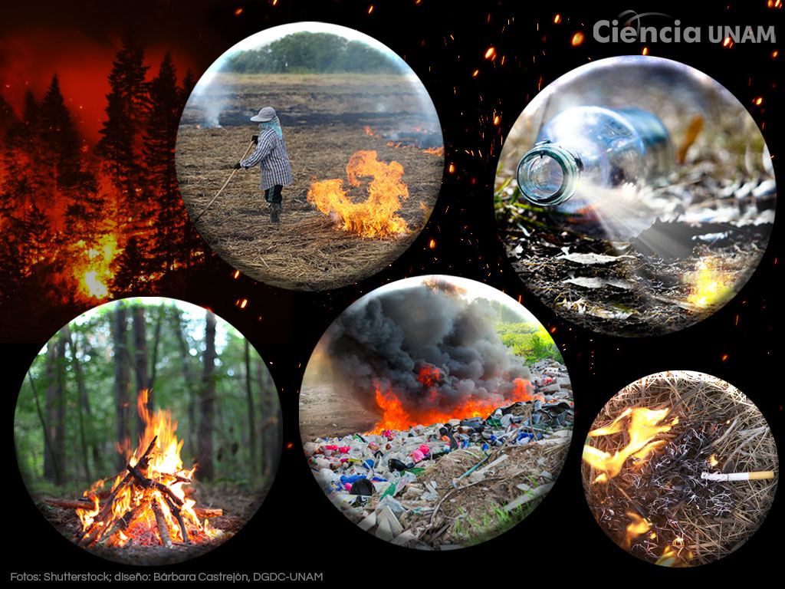

Causas de los incendios forestales.
Causas naturales
La más significativa y común es la caída de rayos producidos por tormentas eléctricas, principalemente cuando estas no son acompañadas de lluvia. Otra causa que puede producir incendios en algunas regiones es la actividad volcánica.
Causas antropicás
La presencia del hombre en los montes, bosques, o en sus adyacencias, inevitablemente va acompañada de elementos, quehaceres o instalasiones que puedan ocasionar incendios, ya sea por negligencia (fogón mal apagado) o fuegos intencionales para deforestar.

Ejemplos
°Quemas de desperdicios, desechos forestales, limpieza de terrenos y basureros,preparación de sitios para forestación
°Accidentes terrestres, aéreos, con maquinas de trabajo, etc.
°Instalaciones de líneas eléctricas, fallas en transformadores de energía, explociones, incedios en viviendas.
°Negligencia, descuidos, fumadores, juegos de niños, etc
El 95% de los incedios
son causados
por actividades humanas.